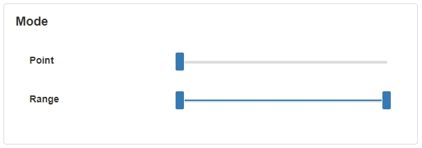
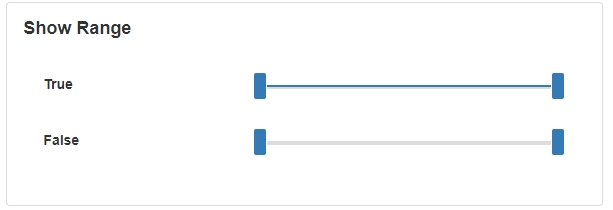
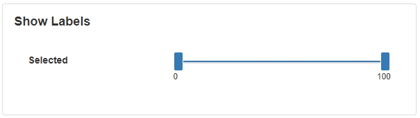
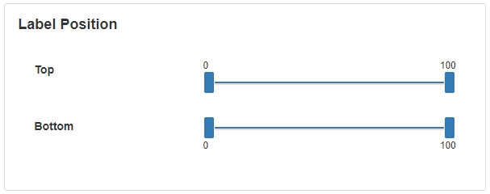
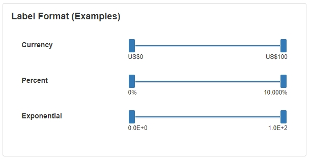
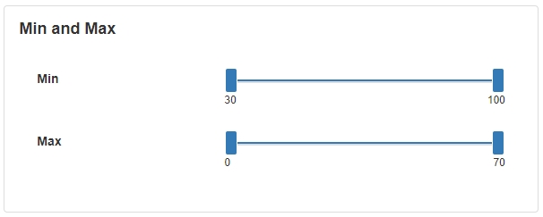
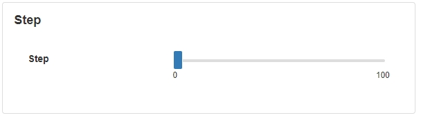
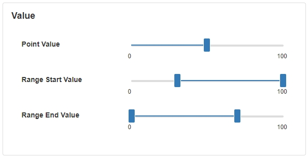

Range Slider
A Range Slider is an input field that can be used to select a numeric value within a given range. This is useful when there is a limited number of options the user should select from and eases the validation for the user's input.
Range Slider Properties
Appearance
Common Properties
The Range Slider has the option to change its visibility and to show tooltips.
See the Common Properties article for more details on common appearance properties.
Options that are specific to Range Sliders include the ability to change the mode, range, or labels. The appearance of the labels such as the positioning and format of the labels can also be configured.
Mode
In point mode, only the single point that the user selected will be visible. When in range mode, the Range Slider allows you to specify whether or not to show the range line between the two selected values.

Show Range
When the show range option is set to true, the range that is selected will be highlighted.

Show Labels
Show labels will add a value on both sides of the slider so the user will know the numeric range.

Label Position
This gives you the option to add the labels either above the slider or underneath the slider.

Label Format
The label format option allows you to choose what type of numeric range the slider is. Some of the options that are available include but are not limited to currency, decimal, fixed point, seconds, minutes, days, or hours.

Behavior
Common Properties
Properties that are common to most Blocks include: read-only and disabled.
See the Common Properties article for more details on common behavior properties.
Min and Max
This affects the minimum and maximum values for where the range starts.

Step
This affects the intervals that are allowed between the values that can be chosen. For example, if the step interval is set to 50, and the user selects 45, the slider value will automatically be set to 50.

Value
If the point option is selected as the mode, there will only be one value. However, if the range option is selected as the mode, you can choose a start value or an end value.
Point Value
This determines what the selected value is when the mode is set to the point option.
Range Start and End value
This determines the range that is selected from the start value to the end value. This is available when the range option is selected for the mode.

Action
Common Properties
Properties that are common to most Blocks include: Navigate To and Show Confirmation Dialog;
See the Common Properties article for more details on common action properties.
Last modified: November 28, 2025